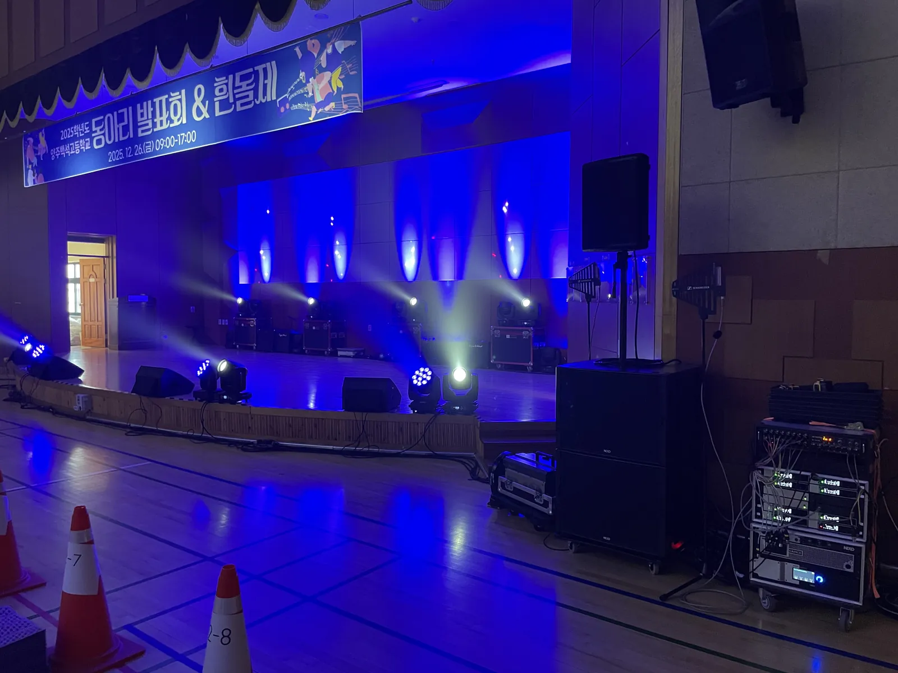
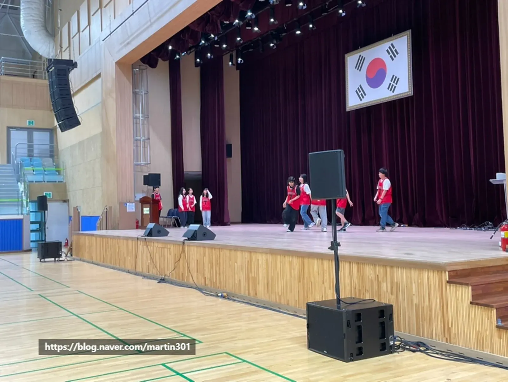
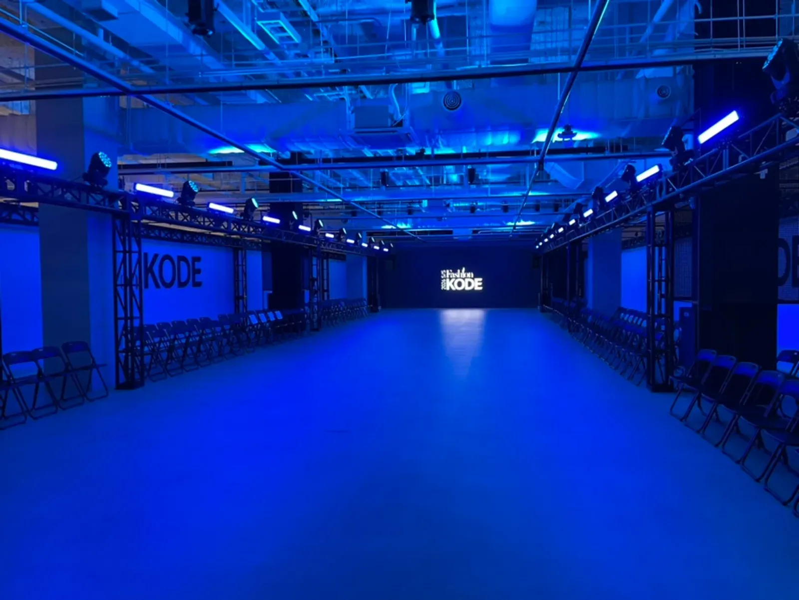

양주 학교 축제 음향은 「공연 순서표」 한 장이 있으면 준비가 절반으로 줄어듭니다. 팀마다 마이크 수와 음원, 무대 위 모니터가 달라서 순서표를 기준으로 장비를 짜기 때문입니다. 제이식스미디어가 양주 백석고 축제 무대 음향 · 조명을 맡았던 현장을 바탕으로, 학교 축제를 처음 맡은 선생님이 챙길 것을 정리했습니다.

- 공연 팀마다 인원 · 악기 · 음원 · 필요한 마이크 수를 적은 순서표를 먼저 만듭니다.
- 학생 공연에는 마이크와 모니터를 넉넉히 두어야 무대 위 학생들이 자기 소리를 듣고 편하게 공연합니다.
- 무대 조명은 밝게 비추는 기본 조명에 분위기 조명(무빙 · LED 바 등)을 더하는 순서로 고릅니다.
- 리허설은 팀 순서대로 마이크 · 음원 · 조명을 한 번씩 맞춰 보는 시간으로 따로 잡습니다.
1. 양주 학교 축제 음향은 공연 순서표에서 시작합니다
학교 축제 무대에는 밴드, 댄스, 합창, 연극, 사회자 진행이 짧은 간격으로 이어집니다. 팀마다 필요한 것이 달라서, 순서표 없이 장비를 정하면 당일에 마이크가 모자라거나 음원이 안 나오는 일이 생깁니다. 아래처럼 팀별로 한 줄씩 적어 두면 음향 · 조명 구성을 바로 짤 수 있습니다.
| 순서 | 팀 · 내용 | 마이크 | 음원 · 악기 | 조명 요청 |
|---|---|---|---|---|
| 1 | 사회 · 개막 인사 | 핸드 2 | 입장 음악 | 밝게 |
| 2 | 댄스 동아리 | 없음 | 음원 파일 | 빠른 색 전환 |
| 3 | 밴드 동아리 | 보컬 2 · 악기용 | 드럼 · 기타 · 베이스 · 건반 | 무대 전체 |
| 4 | 합창 · 중창 | 합창용 여러 개 | 반주 음원 또는 피아노 | 따뜻한 색 |
| 5 | 시상 · 폐막 | 핸드 2 | 시상 음악 | 밝게 |
위 표는 예시입니다. 실제 팀 수와 순서를 보내 주시면 그에 맞춰 마이크 수와 모니터, 조명을 다시 짭니다.
2. 학생 공연에는 마이크와 모니터를 넉넉히
제이식스미디어 하는 일 페이지에 적어 둔 학교행사 원칙은 「학생들이 무대에 서는 축제에는 마이크와 모니터를 넉넉히 준비해 공연이 즐거워지게」입니다. 무대에 처음 서는 학생은 자기 목소리가 안 들리면 긴장해서 소리가 더 작아집니다. 무대 앞에 모니터 스피커를 두어 자기 소리를 듣게 하면 노래와 말이 훨씬 안정됩니다.
- 보컬 마이크는 팀 인원보다 하나 더 — 중간에 고장 나도 바로 바꿉니다.
- 합창은 개인 마이크보다 무대 앞쪽에 여러 개를 고르게 세우는 편이 낫습니다.
- 밴드는 드럼 · 앰프 소리가 커서 보컬 모니터를 따로 챙깁니다.
- 팀이 바뀔 때 마이크 스탠드 높이와 자리를 바꿔 줄 학생 스태프를 정해 둡니다.

3. 축제 무대 조명은 두 단계로 고릅니다
조명은 「얼굴이 잘 보이는 기본 밝기」가 먼저이고, 그다음이 분위기입니다. 강당 천장 조명만으로는 무대 위 얼굴이 어둡게 보이기 쉬워, 무대를 정면에서 비추는 조명을 먼저 챙깁니다. 그 위에 댄스나 밴드 순서의 분위기를 살릴 조명을 더합니다.
| 조명 | 하는 일 | 어울리는 순서 |
|---|---|---|
| 무대 정면 조명 | 얼굴과 무대를 밝게 | 사회 · 연극 · 합창 · 시상 |
| 무빙 · 빔 라이트 | 빛이 움직이며 무대에 힘을 줌 | 댄스 · 밴드 |
| LED 바 | 무대 바닥 · 배경에 색을 깔아 줌 | 모든 순서의 분위기 |
| 스트로보 · 레이저 | 짧고 강한 연출 | 댄스 하이라이트(짧게) |

4. 리허설은 팀 순서대로 한 번씩
축제 당일 오전이나 전날 오후에 리허설 시간을 따로 잡습니다. 팀마다 짧게라도 무대에 올라 마이크 소리와 음원, 조명을 맞춰 보면 본 공연이 매끄럽습니다.
- 음원 파일은 「순서번호_팀이름」으로 이름을 붙여 하루 전까지 한 폴더로 받습니다.
- 팀별로 마이크 개수 · 자리 · 스탠드 높이를 확인합니다.
- 음원 시작 · 끝 신호(사회자 멘트 뒤인지, 팀 입장 뒤인지)를 정합니다.
- 조명 바뀌는 시점을 팀 대표와 함께 한 번 봅니다.
- 리허설이 끝나면 바뀐 내용을 순서표에 적어 음향 · 조명 자리에 붙입니다.
5. 양주 학교 축제 음향 견적 문의 전에 정리할 것
남양주 별내 사무실에서 양주시청까지 차로 약 20분 · 20.6km(막히지 않을 때 기준)입니다. 백석고 축제 현장 사진에는 무대 조명 · 스피커와 함께 스피커와 앰프 랙이 보입니다. 학교 강당이라면 장비를 들일 시간과 무대 근처 전기 위치를 행정실에 미리 물어 두세요.
자동 견적서에서 항목을 골라 보내 주시면 확인 후 안내합니다. 견적서에는 단가가 「협의」로 나오고, 담당자가 현장 여건을 확인한 뒤 확정 견적을 보냅니다.
| 자동 견적서 항목 | 언제 고르나 |
|---|---|
| 학교행사 음향 | 축제 음향 운영을 통째로 맡길 때 |
| 모니터 스피커 | 학생들이 무대에서 자기 소리를 들어야 할 때 |
| 무선 마이크 추가 | 보컬 · 사회 · 연극 마이크가 더 필요할 때 |
| 무빙 · 빔 라이트 | 댄스 · 밴드 순서에 움직이는 조명이 필요할 때 |
| LED 바 · 스트로보 | 무대 바닥 · 배경 조명이 필요할 때 |
| 조명 오퍼레이터 | 순서마다 조명을 바꿔 줄 사람이 필요할 때 |
지역 안내는 양주 음향 · 설치 안내, 운동장 행사 음향은 구리 체육대회 음향 글에 따로 정리했습니다.
자주 묻는 질문
학생 밴드 악기 앰프도 빌려야 하나요?
자동 견적서에는 악기 앰프 항목이 따로 없습니다. 학교나 동아리에서 쓰는 앰프가 있는지 먼저 확인하고, 순서표에 악기 구성을 적어 보내 주시면 음향 구성을 함께 봅니다.
조명만 따로 맡길 수 있나요?
자동 견적서에 무빙 · 빔 라이트, 레이저, LED 바 · 스트로보, 조명 오퍼레이터 항목이 있습니다. 무대 크기와 원하는 분위기를 알려 주시면 맞춰 봅니다.
리허설은 언제 하나요?
강당을 쓸 수 있는 시간에 맞춥니다. 설치 뒤 팀별로 마이크 · 음원 · 조명을 맞출 시간이 필요하니, 강당 사용 가능 시간을 함께 알려 주세요.